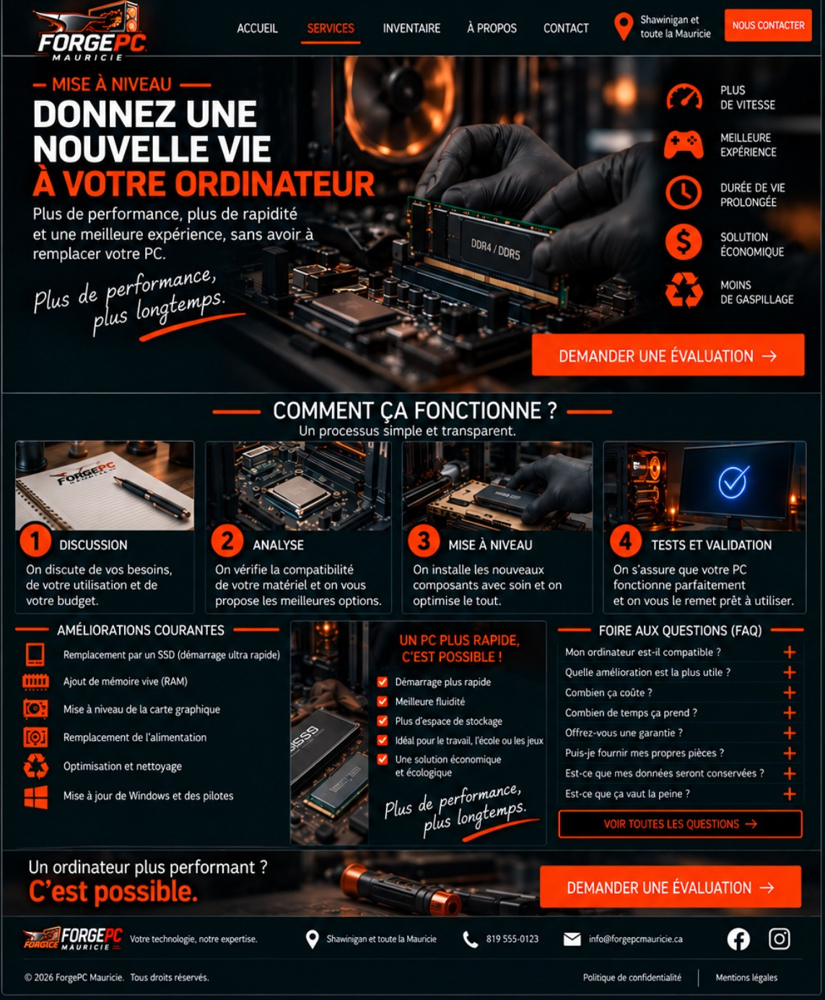
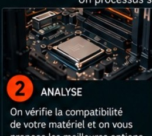

Mise à niveau
Donnez une nouvelle vie
à votre ordinateur
Plus de performance, plus de rapidité et une meilleure expérience, sans avoir à remplacer votre PC.
Plus de performance,
plus longtemps.
plus longtemps.
Plus de
vitesse
vitesse
Meilleure
expérience
expérience
Durée de vie
prolongée
prolongée
Solution
économique
économique
Moins de
gaspillage
gaspillage
Comment ça fonctionne ?
Un processus simple et transparent.

1
Discussion
⌄On discute de vos besoins, de votre utilisation et de votre budget.

2
Analyse
⌄On vérifie la compatibilité de votre matériel et on vous propose les meilleures options.

3
Mise à niveau
⌄On installe les nouveaux composants avec soin et on optimise le tout.

4
Tests et validation
⌄On s’assure que votre PC fonctionne parfaitement et on vous le remet prêt à utiliser.
Foire aux questions (FAQ)
Mon ordinateur est-il compatible ?
La compatibilité est vérifiée avant toute recommandation.
Quelle amélioration est la plus utile ?
Cela dépend de votre usage; SSD et mémoire vive offrent souvent le meilleur gain pour le coût.
Combien ça coûte ?
Le coût dépend des pièces choisies et du travail nécessaire.
Combien de temps ça prend ?
La durée varie selon la mise à niveau et la disponibilité des pièces.
Offrez-vous une garantie ?
Les garanties applicables sont précisées avant les travaux.
Puis-je fournir mes propres pièces ?
Oui, après vérification de la compatibilité et de l’état de la pièce.
Est-ce que mes données seront conservées ?
Dans la plupart des mises à niveau oui, mais une sauvegarde est toujours recommandée.
Est-ce que ça vaut la peine ?
On compare le coût de la mise à niveau avec la valeur et l’âge du PC avant de recommander les travaux.
Un ordinateur plus performant ?